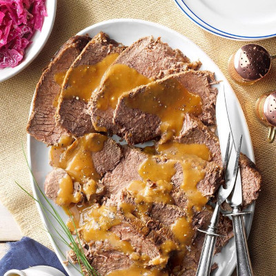

Saurbraten

Description
For this sauerbraten, I found two slightly different handwritten versions of my Grandmother's recipe.
Born in Nekkar am Rhein in 1904, she naturally learned to cook traditional German meals as a young woman and
didn't rely on a cookbook.
I try to capture the nuance in this. Serve with potato dumplings.
Ingredients
- 3 pounds beef rump roast
- 2 large onions, chopped
- 1 cup red wine vinegar, or to taste
- 1 cup water
- 1 tablespoon salt
- 1 tablespoon ground black pepper
- 1 tablespoon white sugar
- 10 whole cloves, or more to taste
- 2 bay leaves, or more to taste
- 2 tablespoons all-purpose flour
- salt and ground black pepper to taste
- 2 tablespoons vegetable oil
- 10 gingersnap cookies, crumbled